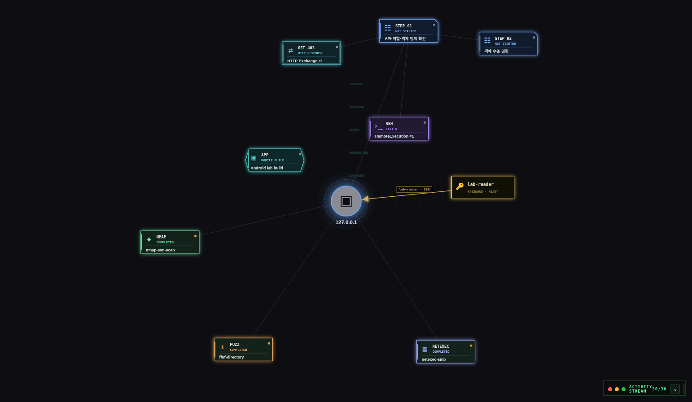

주요 기능
- 정찰·웹 테스트Nmap 서비스 탐색과 feroxbuster·ffuf 기반 디렉토리·가상호스트·파라미터 퍼징 지원. HTTP 요청 편집·페이로드 변형·응답 비교와 프록시 캡처로 웹 동작 검증.
- 인증·AD 점검NetExec 기반 프로토콜별 인증 확인과 SMB 공유 탐색 지원. Kerberos 사용자 열거, AS-REP·Kerberoasting, 제한된 위임(S4U2Self/S4U2Proxy) 등 도메인 점검의 실행 결과·증거 관리.
- PoC 검증·접근 후 조사SearchSploit 후보 검색부터 PoC 원본·작업 사본·수정 이력·실행 결과 관리. SSH·WMI·WinRM 원격 작업과 LinPEAS 분석·SUID 점검으로 접근 후 조사 지원.
- 자격증명·해시 관리획득한 계정의 출처를 기록하고 후속 작업에 연결. Hashcat·John 크래킹과 DPAPI·LSASS 분석 등 자격증명 처리 결과를 조사 기록에 통합.
활동 추적 · 증거 관리
- eBPF 기반 실행 흐름 복원프로세스·TTY 입출력·소켓·파일 이벤트를 수집하고 프로세스 계보·세션·시각을 기준으로 명령 흐름 재구성. 이벤트 손실·신뢰도를 기록하고 귀속이 불명확한 활동은 원본 보존.
- 조사 경로·보고서 연결대상·실행·자격증명·증거·Finding을 Progress Graph로 연결하고 Runbook으로 점검 진행 관리. 증거 출처·SHA-256과 선택한 경로를 스냅샷으로 보관해 PDF·DOCX 등 보고서로 내보내기.